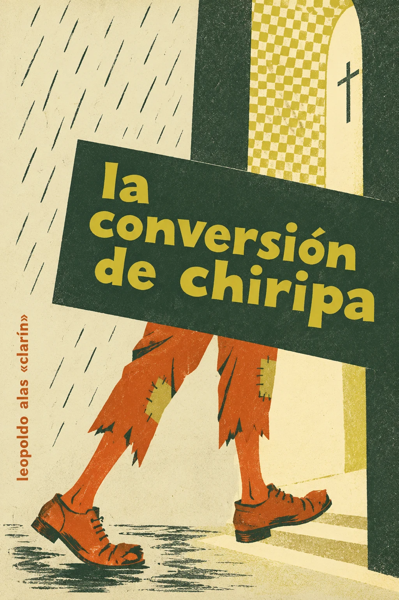

Audiolibros · Tercera Ola
Leopoldo Alas «Clarín» · 1894
Cuento · Recogido en Cuentos morales (1896)
la conversión de chiripa
Una puerta que no lo expulsa.
Después de la intemperie, el descubrimiento de un trato humano.
Publicación: 1894
Escuchar la obraUna puerta que no lo expulsa.
Grabación próximamente
Volumen

La igualdad empieza por hacer sitio
La tormenta vuelve urgente una necesidad elemental: encontrar un lugar donde estar. Pero la ropa y la condición de Chiripa pesan más que esa necesidad en los espacios que lo rechazan. La exclusión se hace concreta en una puerta, un banco y un cuerpo mojado.
Proclamar la igualdad no equivale a dejar que el otro se siente a nuestro lado.
La acogida en la iglesia produce una emoción que Chiripa apenas sabe nombrar. Su idea de «alternancia» sitúa el relato en el terreno del trato recibido, no solo de las doctrinas. La conversión invita a preguntar por qué una experiencia mínima de consideración resulta tan extraordinaria para él.
Primera aparición: Los Lunes de El Imparcial, 17 de diciembre de 1894. Recogido en Cuentos morales en 1896. Texto · Biblioteca Virtual Miguel de Cervantes.
La lectura
Lectura de la obra
Grabación próximamente. Aquí podrás escuchar la obra cuando esté disponible.
Valoración
4.0/5